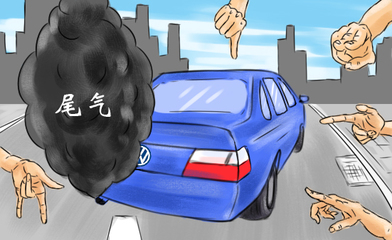

从汽车的制造到提取和燃烧为其供能的汽油，再到耗费石油和其他材料建造供其使用的道路，汽车及其相关产物无疑是很大的污染源。减少汽车的使用能够有效保护环境,保护空气。
1,使用公共交通工具。熟悉你所在城市的公交车、地铁和列车时刻表，并且开始经常使用它们。
2,在你所在城市找到自行车道。越来越多的城市与城镇修建了连接主要区域的新的自行车道。
3,多步行。如果你有时间散步的话，为什么不用步行代替开车呢？任何只要五到十分钟车程的地方都可以步行到达。
4,和别人合用汽车去上学或是上班，而不要自己开车。
